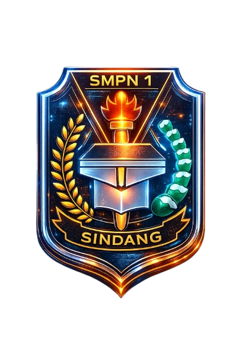

INFORMATIKA VIII
Selamat datang di pusat pembelajaran Informatika. Pilih materi untuk mulai belajar, lalu tekan KERJAKAN TUGAS untuk membuka halaman tugas setiap materi.
TP: Menjelaskan konsep berpikir komputasional dan menerapkannya dalam kehidupan sehari-hari.
TP: Memahami fungsi input, proses, output, dan fungsi dalam pemrograman serta membuat program sederhana untuk menghitung nilai rata-rata, diskon, dan operasi himpunan (gabungan, irisan, dan selisih).
TP: Mendeskripsikan perangkat keras (hardware) dan perangkat lunak (software) komputer beserta fungsinya, menjelaskan cara kerja komputer, serta melakukan konversi bilangan desimal ke heksadesimal dan sebaliknya.
TP: Memahami objek dan fitur pada perangkat lunak aplikasi serta memanfaatkan aplikasi peramban untuk mencari informasi secara efektif di internet.
TP: Membuat game sederhana menggunakan bahasa pemrograman yang dipelajari.
TP: Memahami jenis-jenis jaringan komputer, konfigurasi dan routing, jenis-jenis sinyal, serta menerapkan cara menghubungkan internet ke ponsel dan perangkat lain secara aman melalui koneksi kabel maupun nirkabel.